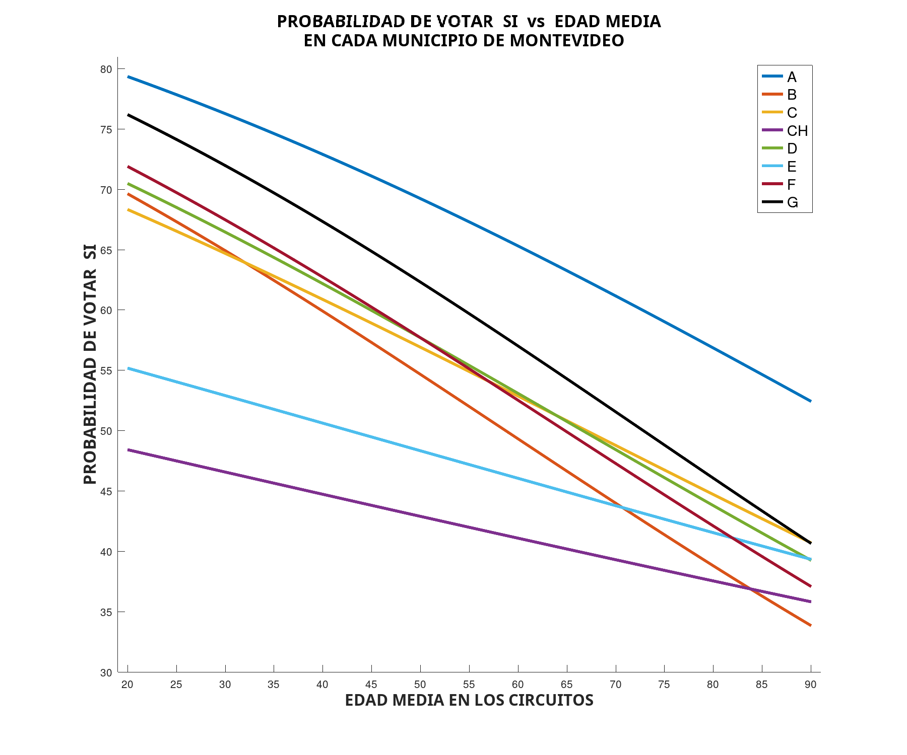

En
construcción
En
construcción
Notas sobre la importancia de la edad en los resultados de
Referendum.
.
ResumenGráficos del porcentaje de votos SÍ por edad para cada Municipio de Montevideo. Modelos de regresión logística para la probabilidad de votar SÍ para cada edad en cada municipio.Comparación de los modelos para cada municipio entre sí.